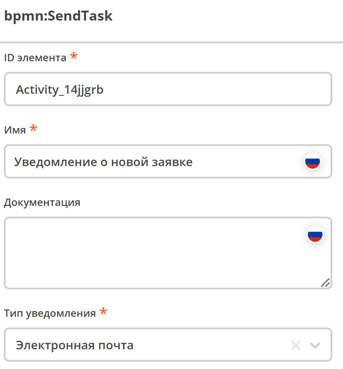
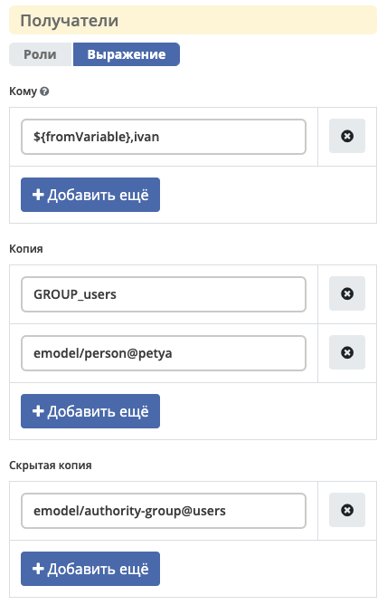
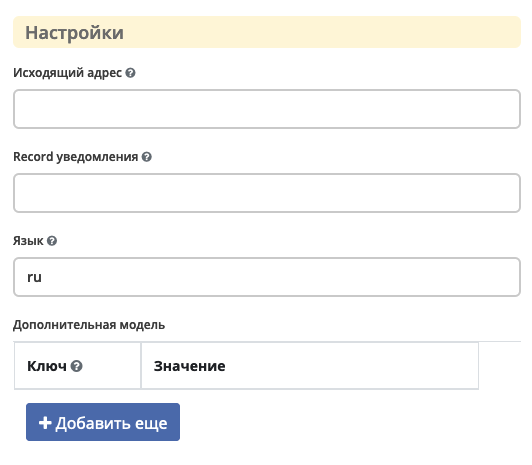
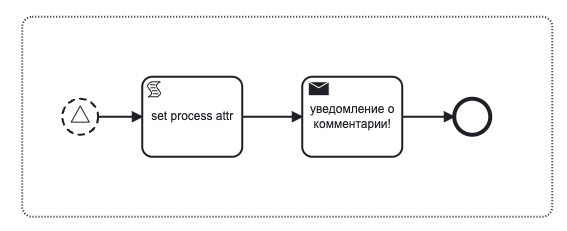
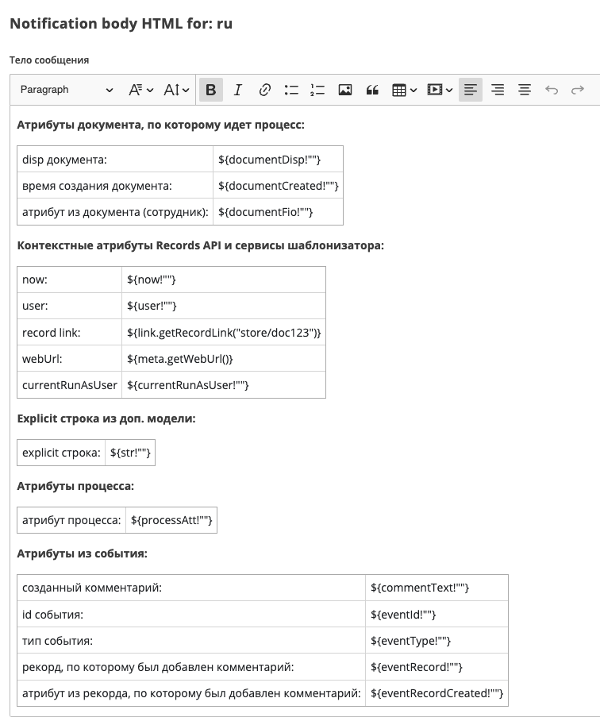

Уведомление
Содержание
Общее описание
Элемент используется для отправки уведомлений пользователям. На данный момент поддерживается только уведомление по электронной почте.
Уведомления отправляются через микросервис ecos-notifications, см. подробнее - уведомления и шаблоны уведомлений.
{kind=link}
Атрибуты и форма
Указать Имя, выбрать Тип уведомления |
 |
Можно выбрать шаблон уведомления или напрямую указать Заголовок и Тело сообщения напрямую. |
|
Получатели могут быть выбраны из: |
 |
Исходящий адрес Record уведомления: |
 |
{kind=link}
{kind=link}
{kind=link}
{kind=link}
{kind=link}
{kind=link}
Доступные переменные
В модели шаблона уведомлений есть доступ к следующим переменным:
Переменные из базового record. По умолчанию это документ, по которому идет бизнес-процесс. Обращение происходит напрямую к атрибутам record.
Переменные процесса. Через переменную
$processдоступны переменные процесса на момент отправки уведомления.Переменные событий Ecos. Доступны через переменную
$process.event.Контекстные переменные Records API
Также в самом шаблоне уведомлений доступны сервисы шаблонизатора
Пример использования переменных в шаблоне
Для примера используем event sub process, который реагирует на событие добавления нового комментария и отправляет уведомление.
{kind=link}
Шаблон уведомления содержит модель:
"model": {
"documentDisp": ".disp",
"documentCreated": "_created",
"documentFio": "fio",
"now": "$now",
"user": "$user",
"processAtt": "$process.someAttr",
"str": "$str",
"commentText": "$process.event.text",
"eventId": "$process.event._meta.id",
"eventType": "$process.event._meta.type",
"eventRecord": "$process.event.eventRecord",
"eventRecordCreated": "$process.event.eventRecordCreated",
"currentRunAsUser": "$process.currentRunAsUser"
}
Шаблон уведомления содержит текст:
В результате получим следующее уведомление: